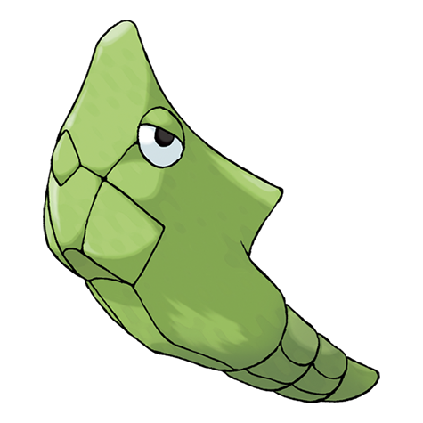

-
Bulbasaur #001

- Grama
- Veneno
Há uma semente de planta em suas costa desde o dia em que este pokemon nasce. A semente cresce lentamente.
-
Ivysaur #002

- Grama
- Veneno
Quando o bulbo em suas costas cresce faz perder a capacidade de ficar de pé em suas patas traseiras
-
Venusaur #003

- Grama
- Veneno
Sua planta floresce quando esta absorvendo energia solar. Ele permanece em movimento para buscar a luz solar
-
Charmander #004

- Fogo
Tem preferencia por coisas quentes. Quando chove, diz-se que o vapor jorra da ponta de sua calda.
-
Charmeleon #005

- Fogo
Tem uma natureza bárbara. Na batalha, ele chicoteia sua cauda ardente e corta com garras afiadas.
-
Charizard #006

- Fogo
Ele cospe fogo que é quente o suficiente para derreter pedregulhos. Pode causar incêndios florestais soprando chamas.
-
Squirtle #007

- Água
Quando ele retrai seu longo pescoço em sua concha, ele esguicha água com força vigorosa.
-
wartortle #008

- Água
É reconhecido como um símbolo de longevidade. Se sua concha tem algas, esse Wartortle é muito antigo.
-
Blastoise #009

- Água
Ele esmaga seu inimigo sob seu corpo pesado para causar desmaios. Em uma pitada, ele se retirará dentro de sua concha.
-
Caterpie #010

- Inseto
Para proteção, ele libera um fedor horrível da antena em sua cabeça para afastar os inimigos.
-
metapod #011
- Inseto
O escudo que cobre o corpo deste Pokémon é tão duro como uma laje de ferro. Metapod não se move muito.
-
butterfree #012

- Inseto
- voador
Tem uma capacidade superior para procurar um delicioso mel de flores. Ele pode até mesmo buscar, extrair, transportar o mel de flores que estão florescendo até seu ninho.